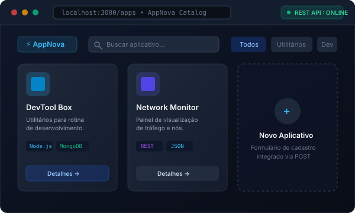

Web & Backend
Sistema desenvolvido para cadastrar, visualizar, pesquisar e filtrar aplicativos por categoria. Conta com frontend dinâmico em HTML, CSS e JavaScript integrado a uma API REST construída com Node.js e banco de dados MongoDB para armazenamento dos registros.
✔ Busca textual e filtros por categoria
✔ Operações via API REST com Node.js
✔ Persistência de dados com MongoDB
HTML5 / CSS3
JavaScript
Node.js
Express
MongoDB
Ver no GitHub
Ambiente Local & API